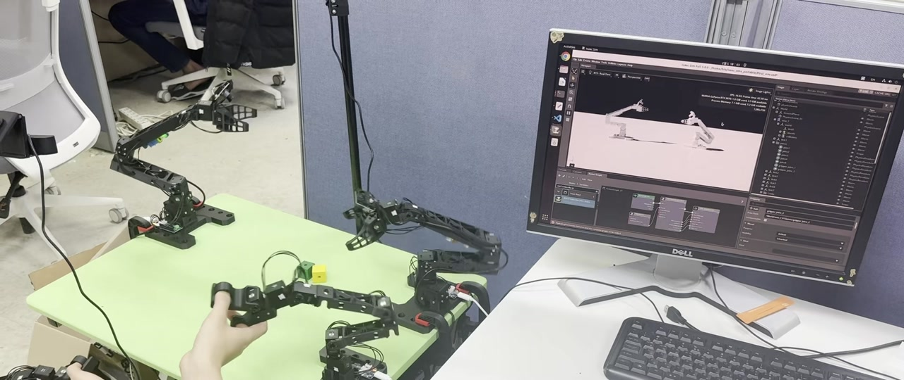
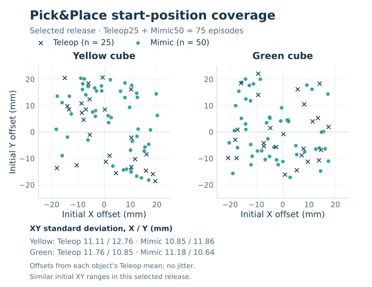
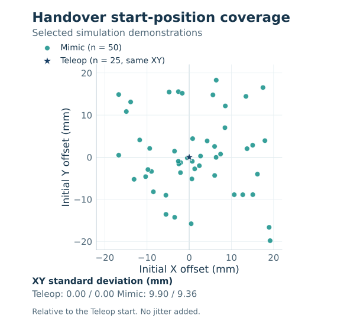
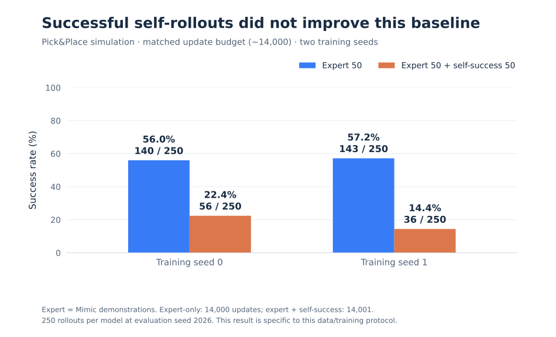
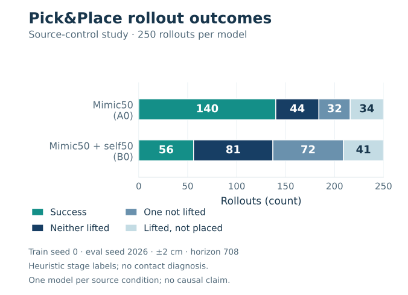
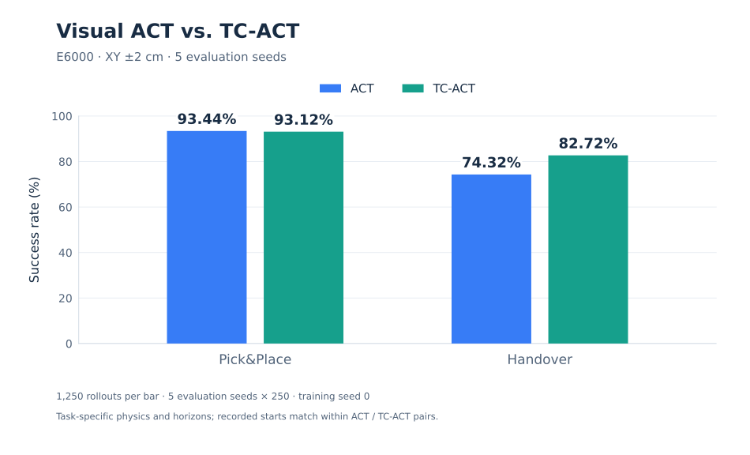
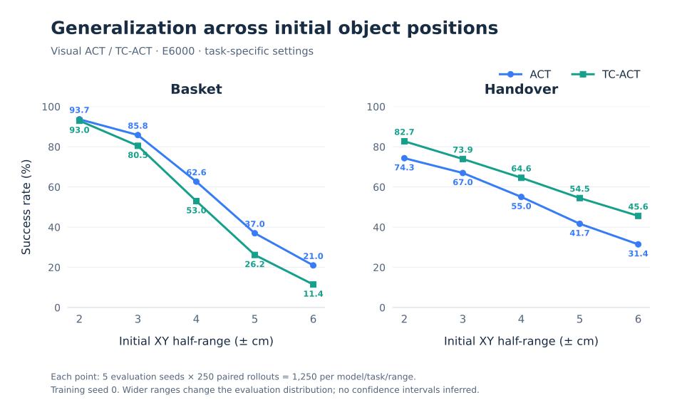

01 / QUESTION
What improves bimanual manipulation?양팔 조작 성능을 바꾸는 요인은?
I examine policy context, demonstration data and execution timing through task-level comparisons and physical deployment.정책의 문맥 정보, 시연 데이터와 실행 주기를 태스크별 비교 실험과 실로봇 적용으로 살펴봅니다.
RESEARCH / ROBOT LEARNING
I study how policy structure, demonstration data, and execution timing affect bimanual manipulation. My work connects model extensions and controlled experiments to a dual-arm OpenMANIPULATOR-X system.정책 구조, 시연 데이터, 실행 주기가 양팔 조작에 어떤 영향을 주는지 연구합니다. 모델 확장과 통제 실험을 양팔 OpenMANIPULATOR-X 시스템에 연결합니다.
01 / QUESTION
I examine policy context, demonstration data and execution timing through task-level comparisons and physical deployment.정책의 문맥 정보, 시연 데이터와 실행 주기를 태스크별 비교 실험과 실로봇 적용으로 살펴봅니다.
02 / CONTRIBUTION
I implemented the TC-ACT extension, adapted ACT and Diffusion policies, and connected data collection, evaluation and ROS 2 robot execution.TC-ACT 확장을 구현하고 ACT·Diffusion 정책을 적용했으며, 데이터 수집·평가·ROS 2 로봇 실행을 연결했습니다.
03 / FINDINGS
In the E6000 comparison, TC-ACT improved Handover but not Pick&Place. Separately, Diffusion deployment work measured model latency, feedback age, and command ordering using established runtime techniques.E6000 비교에서 TC-ACT는 Handover 성능을 개선했지만 Pick&Place에서는 개선되지 않았습니다. 별도의 Diffusion 배포 실험에서는 기존 실행 최적화 기법을 적용하고 모델 지연·피드백 지연·명령 순서를 각각 측정했습니다.
A complete experimental pipeline전체 실험 파이프라인
I built the interfaces between the robot assets and manipulation tasks, ROS 2 leader/follower teleoperation, aligned demonstration datasets, policy training, and rollout evaluation. The digital twin supports task development and replay; hardware execution has its own observation and control contracts.로봇 자산과 조작 태스크, ROS 2 리더·팔로워 텔레오퍼레이션, 정렬된 시연 데이터셋, 정책 학습과 롤아웃 평가를 연결했습니다. 디지털 트윈은 태스크 개발과 재생에 활용하고, 실로봇 실행에는 관측·제어 규약을 별도로 맞췄습니다.

Dual-arm assets, joint and gripper mapping, contacts, resets, and Pick&Place / Handover success conditions.양팔 자산, 관절·그리퍼 매핑, 접촉·초기화 처리와 Pick&Place·Handover 성공 조건을 구성했습니다.
HDF5 episodes, RGB/state/action alignment, source IDs, normalization statistics, and training/validation splits.HDF5 에피소드, RGB·state·action 정렬, 출처 ID, 정규화 통계와 학습·검증 분할을 관리했습니다.
Policy server → TCP → ROS 2 → physical arms, with explicit joint order, units, scaling, and reset behavior.정책 서버 → TCP → ROS 2 → 실물 로봇 경로에서 관절 순서·단위·스케일과 초기화 방식을 맞췄습니다.
The ROS 2 leader/follower setup connects recording, aligned HDF5 episodes, policy training, matched rollout evaluation, and hardware control with consistent joint/gripper action contracts.ROS 2 리더·팔로워 구성은 데이터 기록, 정렬된 HDF5 에피소드, 정책 학습, 동일 조건 평가, 실물 제어를 일관된 관절·그리퍼 행동 규약으로 연결합니다.
ROS 2 · OpenMANIPULATOR-X
Teleoperation · Mimic · Code-scripted텔레오퍼레이션 · Mimic · 코드 스크립트
ACT · TC-ACT · Diffusion Policy
Task success · Matched resets태스크 성공률 · 동일 초기조건
GPU → TCP → ROS 2 → OMX
Three policies, distinct implementation contributions세 정책 모델과 각각의 구현 기여
ACT and Diffusion Policy provide two action-generation families. TC-ACT is the ACT extension implemented in this project.ACT와 Diffusion Policy는 서로 다른 행동 생성 계열이며, TC-ACT는 이 프로젝트에서 구현한 ACT 확장입니다.
Adapted Transformer-based ACT to the bimanual tasks: CVAE training, ResNet18 image features in visual versions, joint observations, action normalization, and temporal aggregation. Low-dimensional and visual checkpoints use different inputs.Transformer 기반 ACT를 양팔 태스크에 적용했습니다. CVAE 학습, 시각 버전의 ResNet18 특징, 관절 관측, 행동 정규화와 temporal aggregation을 연결했으며 저차원·영상 체크포인트의 입력 구성을 구분했습니다.
Extended ACT with sampled joint and image histories, a temporal encoder, and learned context tokens. Compared observation modalities, history use, CVAE/phase settings, and generalization across object placements.표본화한 과거 관절·영상, 시간 인코더와 학습 가능한 문맥 토큰을 ACT에 추가했습니다. 관측 모달리티, 이력 사용, CVAE·phase 설정 및 물체 초기 위치 변화에 대한 일반화를 비교했습니다.
Architecture and model versions ↓구조와 모델 버전 ↓Trained conditional 1D U-Net policies with FiLM/DDIM, implemented observation/action interfaces, evaluated DDIM-step effects on simulation success, and separately benchmarked established compilation techniques.FiLM 조건부 1D U-Net·DDIM 정책을 학습하고 관측·행동 인터페이스를 구현했습니다. DDIM 단계별 시뮬레이션 성공률을 비교했으며, 별도 모델에서 기존 컴파일 기법의 지연 효과를 측정했습니다.
Current-state and spatial image features현재 상태와 공간 영상 특징
Causal encoder → learned context tokens인과적 인코더 → 학습 가능한 문맥 토큰
Future action sequence; reset-aware history미래 행동 시퀀스 · 초기화에 맞춘 이력 처리
TC-ACT / ARCHITECTURE FIGURES


How does the data change the learned behavior?데이터가 학습된 행동을 어떻게 바꾸는가?
I studied demonstration source, quality, mixture, and training budget alongside task success and placement generalization.시연의 출처·품질·혼합비·학습 예산을 작업 성공률과 위치 일반화 성능에 연결해 분석했습니다.
Capture operator strategies through leader/follower control and record aligned trajectories.리더·팔로워 제어로 사람의 조작 전략을 기록하고 시연 궤적을 정렬했습니다.
Segment subtasks, retarget around objects, and broaden initial-position coverage while tracking the source episodes.하위 작업을 분할하고 물체 기준으로 궤적을 재배치하여 초기 위치 범위를 넓히고 원본 계보를 관리했습니다.
Plan object-relative motion, execute it with IK and physical contact, and verify the saved demonstrations in RGB replay.물체 기준 동작을 계획하고 IK·물리 접촉으로 실행한 뒤, 저장한 시연을 RGB 재생으로 검증했습니다.
Select successful policy executions and test teacher/student data composition under controlled retraining conditions.정책 실행에서 성공 궤적을 선별하고 교사·학생 데이터 구성을 통제하여 재학습했습니다.
REAL → SIM / PICK&PLACE
Explore the same demonstration in real camera footage, simulation, and an overlay.같은 시연의 실물 영상과 시뮬레이션을 겹쳐 보거나 각각 살펴보세요.
The camera view and workspace were built around the real demonstration footage. Recorded joint commands guided the grasp-and-place motion, which was adjusted and executed in a physics simulation to record new images and joint data.실물 시연 영상에 맞춰 카메라 시점과 작업 환경을 구성했습니다. 함께 기록한 관절 명령으로 집기·놓기 동작을 보정하고, 물리 시뮬레이션에서 실행하며 새로운 영상과 관절 데이터를 저장했습니다.


I connected subtask segmentation, object-relative trajectory retargeting, physics replay, and source-episode lineage. Each task uses a specific aligned Teleop25 + Mimic50 release. Pick&Place plots both objects separately: 75 points per object, 150 in total, centered on each object's Teleop mean. Handover plots 75 positions centered on the fixed Teleop layout. All positions are recorded initial XY values, shown in mm without artificial jitter.하위 작업 분할, 물체 기준 궤적 재배치, 물리 재생과 원본 시연 계보를 연결했습니다. 각 태스크의 특정 Teleop25 + Mimic50 정합 릴리스를 사용합니다. Pick&Place은 두 물체를 따로 표시하며 물체마다 75개, 총 150개 위치를 각 Teleop 평균 기준으로 중심화했습니다. Handover는 고정 Teleop 배치를 기준으로 초기 위치 75개를 표시합니다. 모두 기록된 초기 XY 값이며 mm 단위로 인위적인 jitter 없이 그렸습니다.
The Pick&Place collector reads object and basket poses from simulator state, plans staged motion, and executes it through physical contact to record successful demonstrations.Pick&Place 수집기는 시뮬레이터 상태에서 물체·바구니 위치를 읽어 단계별 동작을 계획하고, 물리 접촉으로 실행해 성공한 시연을 기록합니다.
Simulator object poses and left / right basket slots시뮬레이터의 물체 위치·바구니 좌우 슬롯
Approach, grasp, lift, transport, release and return접근·파지·들기·운반·놓기·복귀
Position targets → joint and finger commands위치 목표 → 관절·손가락 명령
Grasp, carry and settle through contact접촉을 통한 파지·운반·안정화
Export successes, then replay saved actions for RGB성공 시연 저장 후 행동 재생으로 RGB 기록
Left arm · yellow · place & return왼팔 · 노란 물체 · 배치 후 복귀Right arm · green · place & return오른팔 · 초록 물체 · 배치 후 복귀
The inactive arm holds its position with the gripper open.비작동 팔은 위치를 유지하고 그리퍼를 열어 둡니다.

Here, “Expert50” means 50 Mimic expert-source demonstrations. Adding 50 successful policy rollouts reduced success under this recorded protocol.여기서 “Expert50”은 Mimic 전문가 출처 시연 50개를 뜻합니다. 이 기록의 실험 조건에서는 정책 성공 롤아웃 50개를 추가했을 때 성공률이 낮아졌습니다.
Students train from scratch; comparisons use final checkpoints. The failure breakdown below uses training seed0 only, with XY ±2cm, horizon708, AMP off, and temporal aggregation decay0.01.학생 모델은 처음부터 학습하고 최종 체크포인트로 비교했습니다. 아래 실패 분류는 학습 seed0만 사용하며 XY ±2cm·horizon708·AMP off·temporal aggregation decay0.01 조건입니다.

ACT and TC-ACT under a shared core protocol공통 학습·평가 기준에서의 ACT·TC-ACT
E6000 · XY ±2cm · AMP on. Five evaluation seeds × 250 rollouts: 1,250 trials per model and task.E6000 · XY ±2cm · AMP on. 평가 시드 5개 × 250회, 모델·태스크당 1,250회로 비교했습니다.

TC-ACT adds state / image history and a future-joint auxiliary objective. The comparison evaluates these model configurations together.TC-ACT는 상태·영상 이력과 미래 관절 보조 학습 목적을 추가합니다. 이 모델 구성 전체를 비교한 결과입니다.

ACT, TC-ACT, Diffusion and SmolVLA—from GPU inference to smart-servo controlACT·TC-ACT·Diffusion·SmolVLA를 GPU 추론에서 스마트서보 제어까지
I connected learned policies to the dual-arm robot, then worked on observation timing, inference latency, and action delivery. The diagrams connect inference, action chunks, ROS 2 command rates and smart-servo control.학습 정책을 양팔 로봇에 연결하고 관측 시점, 추론 지연과 행동 전달을 개선했습니다. 추론·행동 청크·ROS 2 명령 주기와 스마트서보 제어를 하나의 흐름으로 연결했습니다.
Separate 50Hz policy and command loops, with the starting gripper state aligned to the demonstrations.정책과 명령을 각각 독립된 50Hz로 실행하고, 시작 그리퍼 상태를 학습 시연과 맞췄습니다.
5 consecutive observed handover successes실물 Handover 연속 5회 성공 관찰Real-camera-trained policies use live RGB, joints and sampled history, with asynchronous camera capture.실카메라 시연으로 학습한 정책에 실시간 RGB·관절·표본화한 이력을 연결하고 카메라 획득을 분리했습니다.
Pick&Place 84% · Handover 92%Pick&Place 84% · Handover 92%Applied established PyTorch compilation and full-DDIM CUDA Graph techniques, then separately examined model timing, feedback freshness and ordered commands on hardware.기존 PyTorch 컴파일·전체 DDIM CUDA Graph 기법을 적용했습니다. 모델 추론 시간과 별도로 실로봇 관절 피드백의 최신성 및 행동 명령 순서를 검증했습니다.
Send live RGB, joints and instructions to the GPU server. Execute the current chunk at 30 Hz while the next one is computed asynchronously.실시간 RGB·관절·지시문을 GPU 서버로 보내고, 다음 청크를 비동기로 계산하는 동안 기존 청크를 30Hz로 실행합니다.
30 Hz commands · 50-action chunks30Hz 명령 · 50행동 청크COMMUNICATION / CONTROL / ACTION CHUNKS
Follow the command and feedback path, then explore how each policy prepares its next action or chunk.명령과 피드백이 오가는 주기를 따라가고, 정책마다 다음 행동과 청크를 준비하는 방식을 살펴보세요.
10 ms · read → update → write
20 ms · joint targets목표 관절각
33.3 ms · joint targets목표 관절각
Model inference · action generation모델 추론 · 행동 생성
CUDA · RTX 3070
Latest feedback · action selection · joint mapping최신 피드백 · 행동 선택 · 관절 매핑
1 action / reply응답당 행동 1개
JointTrajectory
Controller
DYNAMIXEL bus
Execute target angles목표 관절각 실행
Position feedback관절 위치 피드백
Select a policy below to update the TCP and command rates. ROS 2 uses DDS / Fast DDS; the GPU server and client communicate over localhost TCP.아래 정책을 선택하면 TCP 요청·응답과 명령 주기가 바뀝니다. ROS 2는 DDS / Fast DDS로, GPU 서버와 클라이언트는 localhost TCP로 통신합니다.
NEXT ACTION / NEXT CHUNK
At each 20 ms target tick, infer a new chunk and combine overlapping predictions for the current instant. The server returns one action for the robot client to publish.20ms 목표 주기마다 새 청크를 예측하고, 여러 청크가 현재 시점에 예측한 행동을 temporal ensemble로 결합합니다. 서버는 행동 하나를 반환하고 로봇 클라이언트가 목표 관절각을 발행합니다.
Target · every 20 ms목표 주기 · 20ms마다
Fresh prediction each step매 스텝 새 예측
Task2 ACT / visual TC-ACTTask2 ACT / 시각 TC-ACT
One joint target per tick틱마다 목표 관절각 하나
ACT: joints + fixed environment. TC-ACT: joints, RGB and history.ACT는 관절·고정 환경값, TC-ACT는 관절·RGB·이력을 사용합니다.
Task2 ACT: 100 actions. Visual TC-ACT: 50 actions.Task2 ACT는 100개, 시각 TC-ACT는 50개 행동을 예측합니다.
Combine predictions from overlapping chunks for this instant.여러 청크에서 현재 시점에 해당하는 예측을 가중 결합합니다.
Send the combined action over TCP; repeat for the next tick.결합한 행동을 TCP로 반환하고 다음 스텝에서 다시 예측합니다.
Capture the current joint state.현재 관절 상태를 읽습니다.
Send the observation for this step.이번 스텝의 관측을 전달합니다.
Receive the action selected by temporal ensemble.Temporal ensemble로 선택한 행동을 받습니다.
Map to physical joints and send through ROS 2.실물 관절 순서로 변환해 ROS 2로 보냅니다.
↻ The next tick uses a new observation and a new prediction. TC-ACT server inference measured about 15 ms; camera capture runs separately at a configured 30 FPS.다음 틱에는 새 관측으로 다시 예측합니다. TC-ACT 서버 추론 측정값은 약 15ms이며, 카메라는 별도 스레드에서 30FPS로 설정해 획득합니다.
DDIM predicts 16 steps and retains 8 in the server queue. Each TCP request returns one queued action. After the eighth action is published, the next request triggers another chunk calculation in a separate worker.DDIM으로 16스텝을 예측해 서버 큐에 8개를 저장합니다. TCP 요청마다 큐에서 행동 하나를 반환합니다. 8번째 행동을 발행한 뒤 다음 요청이 새 청크 계산을 시작하며, 통신·추론은 별도 worker에서 처리합니다.
One queued action per reply응답마다 큐의 행동 하나
Nominal · once per 8 actions명목상 · 8행동마다 한 번
Steps predicted → queued예측 스텝 → 큐에 저장
20 ms target interval20ms 목표 간격
Pop one action from the queue for each request.요청마다 서버 큐에서 행동 하나를 꺼냅니다.
The request after action 8 triggers a new sample.8번째 행동 다음 요청에서 새 청크를 계산합니다.
DDIM 10 → predict 16 steps → retain 8 actions.DDIM 10단계 → 16스텝 예측 → 8행동 저장.
Return the first action; keep the remaining 7 in the queue.새 청크의 첫 행동을 반환하고 나머지 7개를 큐에 둡니다.
Consume each action once at 50 Hz.50Hz로 행동을 하나씩 순서대로 사용합니다.
Submit the next request after publishing action 8.8번째 행동을 발행한 직후 다음 요청을 보냅니다.
Keep the previous target while the reply is pending.응답을 기다리는 동안 직전 목표를 유지합니다.
Consume the response on a control tick, preserving order.제어 틱에서 응답을 받아 행동 순서를 이어갑니다.
↻ The worker calculates the next chunk while the control loop keeps its schedule. A late reply adds a target-hold tick. The physical-run median was 14.00 ms for new inference and 19.89 ms between commands.별도 worker가 다음 청크를 계산하는 동안 제어 루프는 주기를 유지합니다. 응답이 늦으면 직전 목표를 한 틱 더 유지합니다. 실물 로그의 새 추론 중앙값은 14.00ms, 명령 간격 중앙값은 19.89ms였습니다.
The client sends real RGB, 12D joints and the instruction asynchronously. While the GPU computes a new 50-action chunk, the client continues issuing time-aligned actions from the current chunk at 30 Hz.클라이언트가 실카메라 RGB·관절 12D·언어 지시를 비동기로 보냅니다. GPU가 새 50행동 청크를 계산하는 동안, 클라이언트는 기존 청크에서 현재 시각에 맞는 행동을 골라 30Hz로 계속 발행합니다.
Measured · 10 Hz configured target실측 · 요청 목표 10Hz
Server medians in recent runs최근 실행의 서버 중앙값
A new chunk for the client새 청크를 클라이언트로 전송
33.3 ms · independent of inference33.3ms · 추론과 분리
Start a request when the inference worker is available.진행 중인 요청이 끝나면 새 관측을 받습니다.
Flow Matching 5 steps produce 50 actions.Flow Matching 5단계로 행동 50개를 생성합니다.
Send the chunk with its observation timestamp.관측 시각과 연결된 새 행동 청크를 반환합니다.
Replan after 3 ticks once the previous request completes.3틱 간격 조건과 이전 요청 완료를 만족하면 다시 계산합니다.
Choose the current action at each 30 Hz tick.30Hz 틱마다 현재 시점의 행동을 선택합니다.
Keep sending actions while chunk B is being calculated.B를 계산하는 동안에도 기존 행동을 계속 보냅니다.
Skip elapsed rows using the observation timestamp.관측 이후 지난 시간에 맞춰 행동 인덱스를 선택합니다.
Crossfade the chunks, then continue with the new one.청크를 블렌딩한 뒤 새 청크의 행동으로 이어갑니다.
↻ The full preset crossfades over 5 ticks, filters arm commands at a 4 Hz cutoff, and delays the gripper by 2 ticks. Command publication stays at 30 Hz.full 설정은 5틱 청크 블렌딩, 팔 명령의 4Hz 저역통과 필터, 그리퍼 2틱 지연을 사용합니다. 로봇 명령 발행은 30Hz로 유지합니다.
50 Hz and 6.25 Hz are target / nominal rates. SmolVLA request rates and inference medians come from the recent physical-run logs. Sequence playback highlights processing order.50Hz·6.25Hz는 목표·명목 주기이며, SmolVLA 요청 주기와 추론 중앙값은 최근 실물 로그 기준입니다. 처리 순서 재생은 블록의 진행 순서를 보여줍니다.
Denoising, fresh feedback and ordered robot commands.디노이징과 최신 피드백, 행동 순서를 유지하는 로봇 명령.
Applied existing PyTorch compilation and CUDA Graph mechanisms to the U-Net/DDIM runtime; these are standard deployment techniques, not new optimization algorithms.기존 PyTorch 컴파일과 CUDA Graph 기능을 U-Net/DDIM 실행에 적용했습니다. 새로운 최적화 알고리즘을 개발한 것은 아닙니다.
Read sensor timestamps and reduce the subscription queue so old joint messages do not accumulate.센서 타임스탬프를 확인하고 구독 큐를 줄여 오래된 관절 메시지가 쌓이지 않게 했습니다.
For Diffusion, separate inference and command clocks; hold the previous target when late and preserve action order.Diffusion의 추론과 명령 시계를 분리하고, 추론이 늦으면 이전 목표를 유지해 행동 순서를 보존합니다.
Align arm order, normalization, grippers and starting pose; transition smoothly to the first Diffusion target.양팔 순서·정규화·그리퍼·시작 자세를 맞추고 첫 Diffusion 목표까지 부드럽게 진입하도록 했습니다.
Evaluate DDIM step counts against simulated task completion, alongside runtime optimization.실행시간 최적화와 함께 DDIM 단계 수에 따른 시뮬레이션 작업 성공률을 비교했습니다.
Compare policy targets with measured joints to separate inference delay, motion limits and persistent tracking errors.정책 목표와 실제 관절을 비교해 추론 지연·동작 제한·지속적인 추종 오차를 나눠 분석했습니다.


POLICY VIDEOS정책 영상
Selected simulation rollouts and real-robot demonstrations. The real TC-ACT clips use the same model as in simulation, mapped to hardware.시뮬레이션 롤아웃과 실로봇 시연을 함께 정리했습니다. 실로봇 TC-ACT 영상은 시뮬레이션과 동일한 모델을 하드웨어에 매핑해 구동한 모습입니다.
No video registered미등록 슬롯
No video registered미등록 슬롯
No video registered미등록 슬롯
No video registered미등록 슬롯
No video registered미등록 슬롯
No video registered미등록 슬롯
Questions beyond the core benchmarks핵심 비교를 확장하는 탐색
Further experiments include Mamba-2 temporal encoders and MAT/PPO action-chunk learning. These are exploratory runs, separate from the ACT/TC-ACT results reported above. VLA and world models remain future directions.추가 실험으로 Mamba-2 시간 인코더와 MAT/PPO 행동 청크 학습을 다뤘습니다. 위 ACT·TC-ACT 결과와는 별도의 탐색 실험이며, VLA와 World Model은 향후 연구 방향입니다.